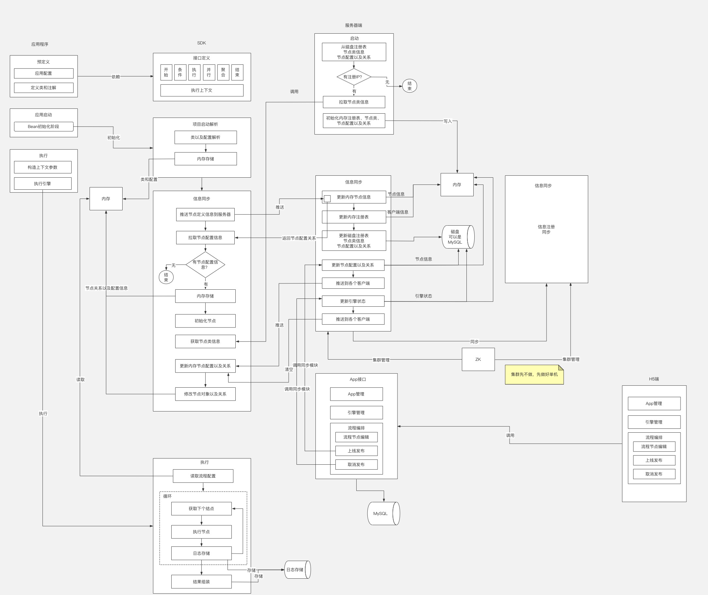
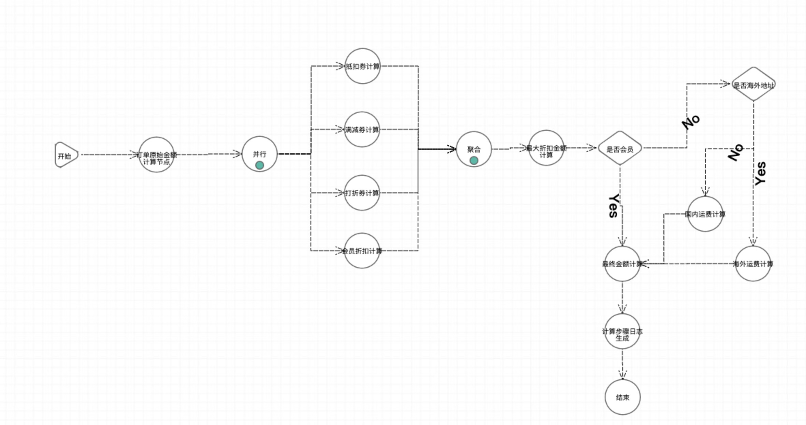

前言
FiboRule Lite - 轻量级规则引擎
- 轻量级 - 会编程即可轻松上手、无需复杂的系统的操作
- 阈值可配置 - 每个流程节点中的变量阈值可通过界面进行配置
- 流程可配置 - 逻辑编排可通过拖拉拽节点来实现
- 配置简单化 - 业务场景中，经常变动的是逻辑编排和阈值。核心支持逻辑编排配置和阈值配置
- 场景化 - 各个业务场景提供示例代码，方便上手
代码结构
- fiborule 后端核心代码
fiborule-common通用dto、枚举、model、util类等fiborule-coreSDK核心代码类fiborule-server服务器端代码fiborule-spring客户端初始化fiborule-spring-boot-starter全景配置参数fiborule-test测试用例fiborule-test-mall场景测试-商城用例fiborule-test-pay场景测试-商城用例 - h5-fiborule-manager 前端核心代码
- document 详细的使用文档
架构图

高清大图地址： https://www.processon.com/view/link/63849862e0b34d37c4717942
Demo图

开源交流
可加微信号，进开源交流群